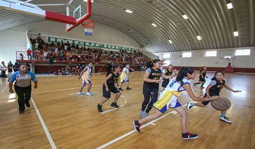
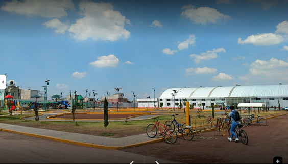
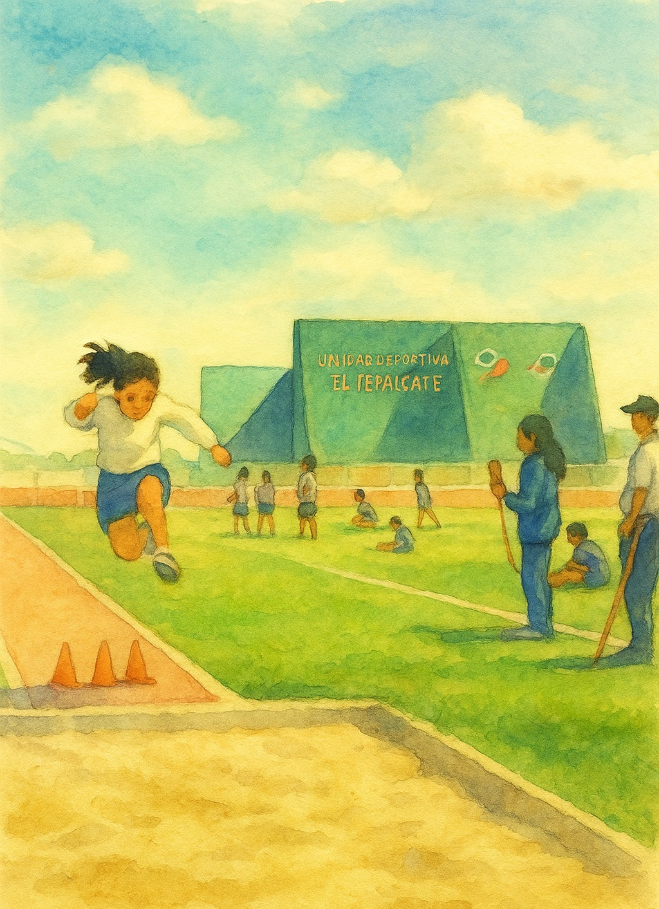
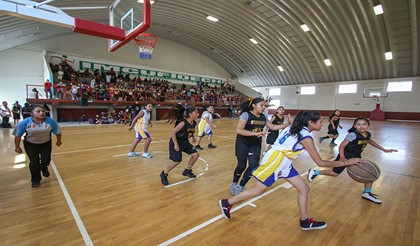
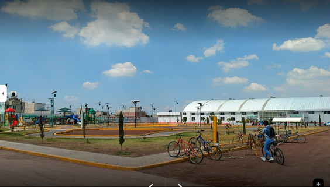
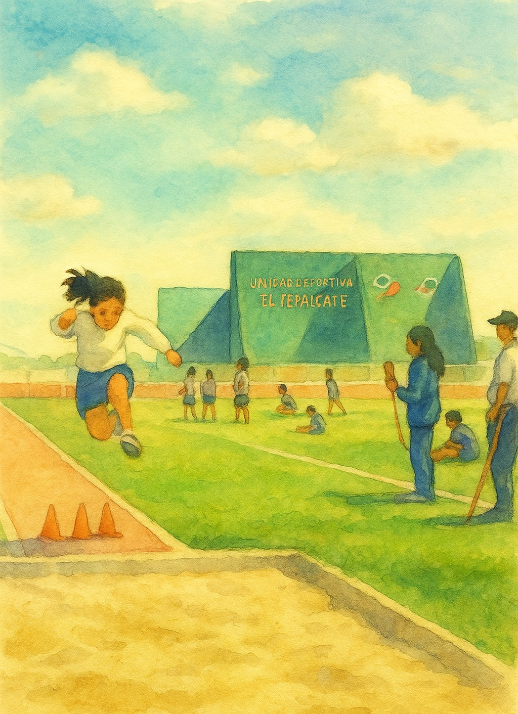

La Zona Deportiva El Tepalcate es un espacio dedicado a la práctica de diversas disciplinas deportivas, promoviendo un estilo de vida saludable entre los habitantes de Chimalhuacán. Cuenta con instalaciones modernas y áreas recreativas para todas las edades.
En El Tepalcate se pueden practicar deportes como fútbol, basquetbol, voleibol y atletismo. Además, se organizan eventos deportivos y torneos que fomentan la competencia sana y el trabajo en equipo.
La zona cuenta con áreas verdes, zonas de descanso y espacios para realizar actividades al aire libre, ideales para disfrutar en familia y con amigos.
La Zona Deportiva El Tepalcate no solo promueve la actividad física, sino que también sirve como un punto de encuentro para la comunidad, fortaleciendo los lazos sociales y fomentando un ambiente de colaboración y apoyo mutuo.
Se ofrecen programas de entrenamiento dirigidos por profesionales en diversas disciplinas, adaptados a diferentes niveles de habilidad, promoviendo el desarrollo de habilidades deportivas y el bienestar físico.
La zona deportiva está abierta de lunes a domingo, de 7:00 a 20:00 horas, permitiendo a los usuarios disfrutar de las instalaciones en horarios flexibles.
La zona organiza eventos especiales como maratones, competencias y festivales deportivos que invitan a la participación de la comunidad y promueven la convivencia.
El Tepalcate está diseñado para ser accesible para personas con discapacidad, con rampas y espacios adecuados para garantizar que todos puedan disfrutar de las instalaciones.
Para más información, puedes contactar al centro deportivo al teléfono (55) 1234-5678.